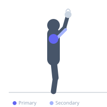
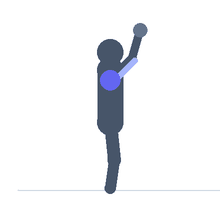

Exercise guide / Kettlebell Bottoms-Up Press
Kettlebell Bottoms-Up Press
The kettlebell bottoms-up press inverts the kettlebell so the bell faces upward above the handle, requiring intense grip and forearm engagement to keep the bell stabilized throughout the press. The unstable inverted position activates the rotator cuff and scapular stabilizers far more than conventional pressing, making it an exceptional shoulder health and stability exercise. The unilateral nature also develops anti-rotation core strength.
Primary muscles
deltoid anterior
infraspinatus
supraspinatus
Secondary muscles
triceps long head
deltoid lateral
Stabilizers
flexor carpi radialis
flexor carpi ulnaris
internal oblique
Equipment
Kettlebell


Starting position
- Hold a kettlebell by the handle with the bell inverted (pointing up), arm at shoulder height. The wrist must be straight and directly under the bell to maintain balance. Begin with a light kettlebell.
Setup
- Start with 25-35% of normal press load. The balance demand changes the nature of the exercise entirely. This can be performed standing, seated, or kneeling.
Steps
- Step 1: Grip the kettlebell handle firmly with the bell balanced above.
- Step 2: Bring the bell to shoulder height with elbow at 90 degrees.
- Step 3: Press directly overhead, keeping the bell balanced at all times.
- Step 4: At lockout, the arm is fully extended with the bell balanced above.
- Step 5: Lower under full control to the starting position.
Coaching cues
- Tight grip — the bell tells you when you're losing it
- Press in a straight line
- Keep your wrist stacked under the bell
Breathing
- Exhale on the press, inhale on the descent.
Range of motion
- Shoulder height to full lockout overhead.
Tempo
- 2-1-3-0
Common mistakes
- Using too heavy a kettlebell — balance failure is the limiting factor initially
- Flaring the elbow wide — keep it slightly forward in the press
- Bracing insufficiently against the unilateral load
Safety
- Have a plan if the kettlebell falls — step away from it rather than catching it
- Begin over a padded surface when learning
Training
- strength: 3–6 reps
- hypertrophy: 6–10 reps
- strength: 3–4 sets
- Rest: {'strength': 150, 'hypertrophy': 90}